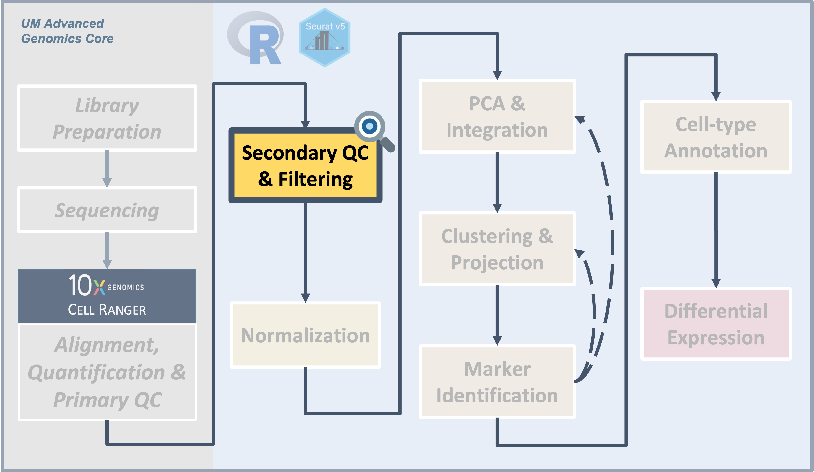
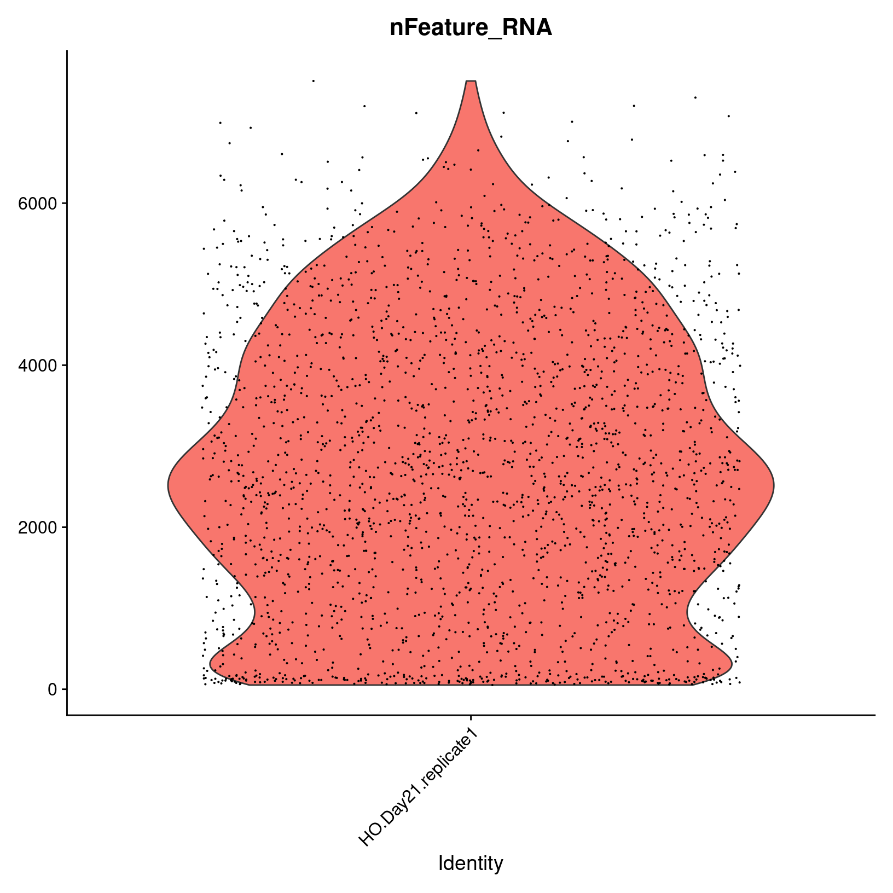
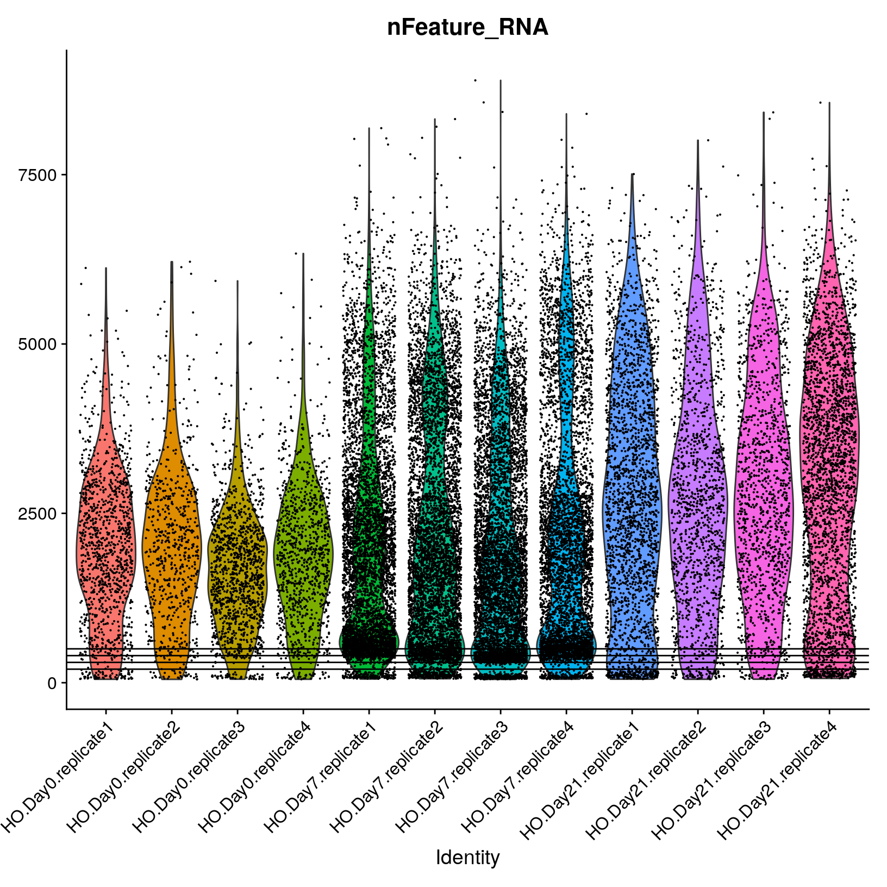
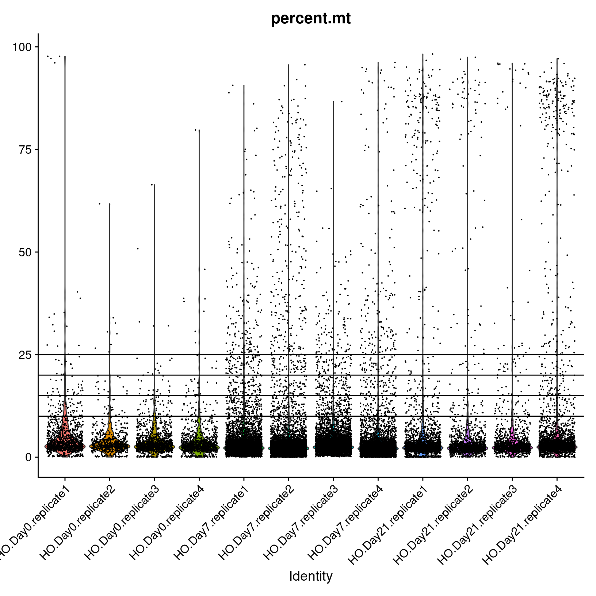

Secondary Quality Control and Filtering
UM Bioinformatics Core Workshop Team
2025-03-13

Introduction

|
| The filtered Cell Ranger barcode feature matrix consists of cells that range in quality. We can use different metrics to visualize and filter to a subset of putative healthy cells to improve downstream analysis. |
Single-cell experiments using the 10x Chromium instrument are
expected to have one cell and one bead in one droplet. However this is
an imperfect process and there are other important considerations like
how healthy or intact the cell was at the time of measurement. In this
section, we will use filtering thresholds to remove “cells” that were
poorly measured, aren’t actually cells, or had more than one cell.
Objectives
- Discuss QC measures and learn how to calculate and plot them.
- Discuss cell-filtering approaches and apply them to our dataset.
Similar to many other areas of research, there are often gaps between
how single-cell data is presented versus the reality of running an
analysis. For example, only the final filtering thresholds might be
reported in a paper but our process for choosing those is likely to be
more iterative and include some trial and error.
Adding metadata
We’re going to alter and add some columns to meta.data
to ease some downstream analysis and plotting steps. This will often be
necessary, as sample names contain combined information about
phenotypes. Let’s take a look at the first few rows again, to reacquaint
ourselves.
##### Day 1 - Secondary QC and filtering
# Examine Seurat metdata ----------------------------------------------
head(geo_so@meta.data) orig.ident nCount_RNA nFeature_RNA condition.x day.x replicate.x
HODay0replicate1_AAACCTGAGAGAACAG-1 HODay0replicate1 10234 3226 HO Day0 replicate1
HODay0replicate1_AAACCTGGTCATGCAT-1 HODay0replicate1 3158 1499 HO Day0 replicate1
HODay0replicate1_AAACCTGTCAGAGCTT-1 HODay0replicate1 13464 4102 HO Day0 replicate1
HODay0replicate1_AAACGGGAGAGACTTA-1 HODay0replicate1 577 346 HO Day0 replicate1
HODay0replicate1_AAACGGGAGGCCCGTT-1 HODay0replicate1 1189 629 HO Day0 replicate1
HODay0replicate1_AAACGGGCAACTGGCC-1 HODay0replicate1 7726 2602 HO Day0 replicate1
percent.mt condition.y day.y replicate.y day.x.x condition.x.x day.y.y
HODay0replicate1_AAACCTGAGAGAACAG-1 1.240962 HO Day0 replicate1 <NA> HO Day0
HODay0replicate1_AAACCTGGTCATGCAT-1 7.536415 HO Day0 replicate1 <NA> HO Day0
HODay0replicate1_AAACCTGTCAGAGCTT-1 3.112002 HO Day0 replicate1 <NA> HO Day0
HODay0replicate1_AAACGGGAGAGACTTA-1 1.559792 HO Day0 replicate1 <NA> HO Day0
HODay0replicate1_AAACGGGAGGCCCGTT-1 3.700589 HO Day0 replicate1 <NA> HO Day0
HODay0replicate1_AAACGGGCAACTGGCC-1 2.938131 HO Day0 replicate1 <NA> HO Day0
replicate.x.x day.x.x.x condition.y.y day.y.y.y replicate.y.y day.x.x.x.x
HODay0replicate1_AAACCTGAGAGAACAG-1 replicate1 <NA> HO Day0 replicate1 <NA>
HODay0replicate1_AAACCTGGTCATGCAT-1 replicate1 <NA> HO Day0 replicate1 <NA>
HODay0replicate1_AAACCTGTCAGAGCTT-1 replicate1 <NA> HO Day0 replicate1 <NA>
HODay0replicate1_AAACGGGAGAGACTTA-1 replicate1 <NA> HO Day0 replicate1 <NA>
HODay0replicate1_AAACGGGAGGCCCGTT-1 replicate1 <NA> HO Day0 replicate1 <NA>
HODay0replicate1_AAACGGGCAACTGGCC-1 replicate1 <NA> HO Day0 replicate1 <NA>
condition.x.x.x day.y.y.y.y replicate.x.x.x day.x.x.x.x.x condition.y.y.y
HODay0replicate1_AAACCTGAGAGAACAG-1 HO Day0 replicate1 <NA> HO
HODay0replicate1_AAACCTGGTCATGCAT-1 HO Day0 replicate1 <NA> HO
HODay0replicate1_AAACCTGTCAGAGCTT-1 HO Day0 replicate1 <NA> HO
HODay0replicate1_AAACGGGAGAGACTTA-1 HO Day0 replicate1 <NA> HO
HODay0replicate1_AAACGGGAGGCCCGTT-1 HO Day0 replicate1 <NA> HO
HODay0replicate1_AAACGGGCAACTGGCC-1 HO Day0 replicate1 <NA> HO
day.y.y.y.y.y replicate.y.y.y day.x.x.x.x.x.x condition.x.x.x.x
HODay0replicate1_AAACCTGAGAGAACAG-1 Day0 replicate1 <NA> HO
HODay0replicate1_AAACCTGGTCATGCAT-1 Day0 replicate1 <NA> HO
HODay0replicate1_AAACCTGTCAGAGCTT-1 Day0 replicate1 <NA> HO
HODay0replicate1_AAACGGGAGAGACTTA-1 Day0 replicate1 <NA> HO
HODay0replicate1_AAACGGGAGGCCCGTT-1 Day0 replicate1 <NA> HO
HODay0replicate1_AAACGGGCAACTGGCC-1 Day0 replicate1 <NA> HO
day.y.y.y.y.y.y replicate.x.x.x.x day.x.x.x.x.x.x.x condition.y.y.y.y
HODay0replicate1_AAACCTGAGAGAACAG-1 Day0 replicate1 <NA> HO
HODay0replicate1_AAACCTGGTCATGCAT-1 Day0 replicate1 <NA> HO
HODay0replicate1_AAACCTGTCAGAGCTT-1 Day0 replicate1 <NA> HO
HODay0replicate1_AAACGGGAGAGACTTA-1 Day0 replicate1 <NA> HO
HODay0replicate1_AAACGGGAGGCCCGTT-1 Day0 replicate1 <NA> HO
HODay0replicate1_AAACGGGCAACTGGCC-1 Day0 replicate1 <NA> HO
day.y.y.y.y.y.y.y replicate.y.y.y.y day
HODay0replicate1_AAACCTGAGAGAACAG-1 Day0 replicate1 <NA>
HODay0replicate1_AAACCTGGTCATGCAT-1 Day0 replicate1 <NA>
HODay0replicate1_AAACCTGTCAGAGCTT-1 Day0 replicate1 <NA>
HODay0replicate1_AAACGGGAGAGACTTA-1 Day0 replicate1 <NA>
HODay0replicate1_AAACGGGAGGCCCGTT-1 Day0 replicate1 <NA>
HODay0replicate1_AAACGGGCAACTGGCC-1 Day0 replicate1 <NA>We can add arbitrary per-cell information to this table such as:
- Summary statistics, such as percent mitochondrial reads for each cell.
- Batch, condition, etc. for each cell.
- Cluster membership for each cell.
- Cell cycle phase for each cell.
- Other custom annotations for each cell.
Each sample has a few interesting attributes like “condition”, “day”, and “replicate”. The sample attributes are actually part of the directory name for each sample:
- Sample directory = count_run_HODay0replicate1
- Condition = HO
- Day = Day0
- Replicate = 1
We could make a fancy script to pull the file names apart into
attributes, but instead we’ll keep things simple and read the sample
attributes from a table in the file phenos.csv:
Load a pre-prepared file:
# Read sample attributes ------------------------------------------
# Load the expanded phenotype columns (condition, day, and replicate)
phenos = read.csv('inputs/phenos.csv')
head(phenos, 3) orig.ident condition day replicate
1 HODay0replicate1 HO Day0 replicate1
2 HODay0replicate2 HO Day0 replicate2
3 HODay0replicate3 HO Day0 replicate3The following code chunk will annotated a copy of the metadata with
columns for day and replicate and ensure that
certain categorical data appears in correct order, e.g. Day0, Day7, and
Day21 instead of Day0, Day21, and Day7.
# Make a temp table that joins Seurat loaded metadata with expanded phenotype columns
# (Also, preserve the rownames and order samples based on order in phenos.csv)
# Note that column "day" is quoted in ...factor("day",...) because day is also
# the name of a function in R
tmp_meta = geo_so@meta.data %>%
rownames_to_column('tmp_rowname') %>%
left_join(phenos, by = 'orig.ident') %>%
mutate(orig.ident = factor(orig.ident, phenos$orig.ident)) %>%
mutate(day = factor("day", unique(phenos$day))) %>%
column_to_rownames('tmp_rowname')
head(tmp_meta) orig.ident nCount_RNA nFeature_RNA condition.x day.x replicate.x
HODay0replicate1_AAACCTGAGAGAACAG-1 HODay0replicate1 10234 3226 HO Day0 replicate1
HODay0replicate1_AAACCTGGTCATGCAT-1 HODay0replicate1 3158 1499 HO Day0 replicate1
HODay0replicate1_AAACCTGTCAGAGCTT-1 HODay0replicate1 13464 4102 HO Day0 replicate1
HODay0replicate1_AAACGGGAGAGACTTA-1 HODay0replicate1 577 346 HO Day0 replicate1
HODay0replicate1_AAACGGGAGGCCCGTT-1 HODay0replicate1 1189 629 HO Day0 replicate1
HODay0replicate1_AAACGGGCAACTGGCC-1 HODay0replicate1 7726 2602 HO Day0 replicate1
percent.mt condition.y day.y replicate.y day.x.x condition.x.x day.y.y
HODay0replicate1_AAACCTGAGAGAACAG-1 1.240962 HO Day0 replicate1 <NA> HO Day0
HODay0replicate1_AAACCTGGTCATGCAT-1 7.536415 HO Day0 replicate1 <NA> HO Day0
HODay0replicate1_AAACCTGTCAGAGCTT-1 3.112002 HO Day0 replicate1 <NA> HO Day0
HODay0replicate1_AAACGGGAGAGACTTA-1 1.559792 HO Day0 replicate1 <NA> HO Day0
HODay0replicate1_AAACGGGAGGCCCGTT-1 3.700589 HO Day0 replicate1 <NA> HO Day0
HODay0replicate1_AAACGGGCAACTGGCC-1 2.938131 HO Day0 replicate1 <NA> HO Day0
replicate.x.x day.x.x.x condition.y.y day.y.y.y replicate.y.y day.x.x.x.x
HODay0replicate1_AAACCTGAGAGAACAG-1 replicate1 <NA> HO Day0 replicate1 <NA>
HODay0replicate1_AAACCTGGTCATGCAT-1 replicate1 <NA> HO Day0 replicate1 <NA>
HODay0replicate1_AAACCTGTCAGAGCTT-1 replicate1 <NA> HO Day0 replicate1 <NA>
HODay0replicate1_AAACGGGAGAGACTTA-1 replicate1 <NA> HO Day0 replicate1 <NA>
HODay0replicate1_AAACGGGAGGCCCGTT-1 replicate1 <NA> HO Day0 replicate1 <NA>
HODay0replicate1_AAACGGGCAACTGGCC-1 replicate1 <NA> HO Day0 replicate1 <NA>
condition.x.x.x day.y.y.y.y replicate.x.x.x day.x.x.x.x.x condition.y.y.y
HODay0replicate1_AAACCTGAGAGAACAG-1 HO Day0 replicate1 <NA> HO
HODay0replicate1_AAACCTGGTCATGCAT-1 HO Day0 replicate1 <NA> HO
HODay0replicate1_AAACCTGTCAGAGCTT-1 HO Day0 replicate1 <NA> HO
HODay0replicate1_AAACGGGAGAGACTTA-1 HO Day0 replicate1 <NA> HO
HODay0replicate1_AAACGGGAGGCCCGTT-1 HO Day0 replicate1 <NA> HO
HODay0replicate1_AAACGGGCAACTGGCC-1 HO Day0 replicate1 <NA> HO
day.y.y.y.y.y replicate.y.y.y day.x.x.x.x.x.x condition.x.x.x.x
HODay0replicate1_AAACCTGAGAGAACAG-1 Day0 replicate1 <NA> HO
HODay0replicate1_AAACCTGGTCATGCAT-1 Day0 replicate1 <NA> HO
HODay0replicate1_AAACCTGTCAGAGCTT-1 Day0 replicate1 <NA> HO
HODay0replicate1_AAACGGGAGAGACTTA-1 Day0 replicate1 <NA> HO
HODay0replicate1_AAACGGGAGGCCCGTT-1 Day0 replicate1 <NA> HO
HODay0replicate1_AAACGGGCAACTGGCC-1 Day0 replicate1 <NA> HO
day.y.y.y.y.y.y replicate.x.x.x.x day.x.x.x.x.x.x.x condition.y.y.y.y
HODay0replicate1_AAACCTGAGAGAACAG-1 Day0 replicate1 <NA> HO
HODay0replicate1_AAACCTGGTCATGCAT-1 Day0 replicate1 <NA> HO
HODay0replicate1_AAACCTGTCAGAGCTT-1 Day0 replicate1 <NA> HO
HODay0replicate1_AAACGGGAGAGACTTA-1 Day0 replicate1 <NA> HO
HODay0replicate1_AAACGGGAGGCCCGTT-1 Day0 replicate1 <NA> HO
HODay0replicate1_AAACGGGCAACTGGCC-1 Day0 replicate1 <NA> HO
day.y.y.y.y.y.y.y replicate.y.y.y.y day.x.x.x.x.x.x.x.x condition
HODay0replicate1_AAACCTGAGAGAACAG-1 Day0 replicate1 <NA> HO
HODay0replicate1_AAACCTGGTCATGCAT-1 Day0 replicate1 <NA> HO
HODay0replicate1_AAACCTGTCAGAGCTT-1 Day0 replicate1 <NA> HO
HODay0replicate1_AAACGGGAGAGACTTA-1 Day0 replicate1 <NA> HO
HODay0replicate1_AAACGGGAGGCCCGTT-1 Day0 replicate1 <NA> HO
HODay0replicate1_AAACGGGCAACTGGCC-1 Day0 replicate1 <NA> HO
day.y.y.y.y.y.y.y.y replicate day
HODay0replicate1_AAACCTGAGAGAACAG-1 Day0 replicate1 <NA>
HODay0replicate1_AAACCTGGTCATGCAT-1 Day0 replicate1 <NA>
HODay0replicate1_AAACCTGTCAGAGCTT-1 Day0 replicate1 <NA>
HODay0replicate1_AAACGGGAGAGACTTA-1 Day0 replicate1 <NA>
HODay0replicate1_AAACGGGAGGCCCGTT-1 Day0 replicate1 <NA>
HODay0replicate1_AAACGGGCAACTGGCC-1 Day0 replicate1 <NA># Assign tmp_meta back to geo_so@meta.data and reset the default identity cell name
geo_so@meta.data = tmp_meta
Idents(geo_so) = 'orig.ident'The orig.ident column looks the same, but is now a
factor with ordering we prefer. We also have day and
replicate columns that will be useful downstream.
# Re-examine Seurat metdata -------------------------------------------
head(geo_so@meta.data) orig.ident nCount_RNA nFeature_RNA condition.x day.x replicate.x
HODay0replicate1_AAACCTGAGAGAACAG-1 HODay0replicate1 10234 3226 HO Day0 replicate1
HODay0replicate1_AAACCTGGTCATGCAT-1 HODay0replicate1 3158 1499 HO Day0 replicate1
HODay0replicate1_AAACCTGTCAGAGCTT-1 HODay0replicate1 13464 4102 HO Day0 replicate1
HODay0replicate1_AAACGGGAGAGACTTA-1 HODay0replicate1 577 346 HO Day0 replicate1
HODay0replicate1_AAACGGGAGGCCCGTT-1 HODay0replicate1 1189 629 HO Day0 replicate1
HODay0replicate1_AAACGGGCAACTGGCC-1 HODay0replicate1 7726 2602 HO Day0 replicate1
percent.mt condition.y day.y replicate.y day.x.x condition.x.x day.y.y
HODay0replicate1_AAACCTGAGAGAACAG-1 1.240962 HO Day0 replicate1 <NA> HO Day0
HODay0replicate1_AAACCTGGTCATGCAT-1 7.536415 HO Day0 replicate1 <NA> HO Day0
HODay0replicate1_AAACCTGTCAGAGCTT-1 3.112002 HO Day0 replicate1 <NA> HO Day0
HODay0replicate1_AAACGGGAGAGACTTA-1 1.559792 HO Day0 replicate1 <NA> HO Day0
HODay0replicate1_AAACGGGAGGCCCGTT-1 3.700589 HO Day0 replicate1 <NA> HO Day0
HODay0replicate1_AAACGGGCAACTGGCC-1 2.938131 HO Day0 replicate1 <NA> HO Day0
replicate.x.x day.x.x.x condition.y.y day.y.y.y replicate.y.y day.x.x.x.x
HODay0replicate1_AAACCTGAGAGAACAG-1 replicate1 <NA> HO Day0 replicate1 <NA>
HODay0replicate1_AAACCTGGTCATGCAT-1 replicate1 <NA> HO Day0 replicate1 <NA>
HODay0replicate1_AAACCTGTCAGAGCTT-1 replicate1 <NA> HO Day0 replicate1 <NA>
HODay0replicate1_AAACGGGAGAGACTTA-1 replicate1 <NA> HO Day0 replicate1 <NA>
HODay0replicate1_AAACGGGAGGCCCGTT-1 replicate1 <NA> HO Day0 replicate1 <NA>
HODay0replicate1_AAACGGGCAACTGGCC-1 replicate1 <NA> HO Day0 replicate1 <NA>
condition.x.x.x day.y.y.y.y replicate.x.x.x day.x.x.x.x.x condition.y.y.y
HODay0replicate1_AAACCTGAGAGAACAG-1 HO Day0 replicate1 <NA> HO
HODay0replicate1_AAACCTGGTCATGCAT-1 HO Day0 replicate1 <NA> HO
HODay0replicate1_AAACCTGTCAGAGCTT-1 HO Day0 replicate1 <NA> HO
HODay0replicate1_AAACGGGAGAGACTTA-1 HO Day0 replicate1 <NA> HO
HODay0replicate1_AAACGGGAGGCCCGTT-1 HO Day0 replicate1 <NA> HO
HODay0replicate1_AAACGGGCAACTGGCC-1 HO Day0 replicate1 <NA> HO
day.y.y.y.y.y replicate.y.y.y day.x.x.x.x.x.x condition.x.x.x.x
HODay0replicate1_AAACCTGAGAGAACAG-1 Day0 replicate1 <NA> HO
HODay0replicate1_AAACCTGGTCATGCAT-1 Day0 replicate1 <NA> HO
HODay0replicate1_AAACCTGTCAGAGCTT-1 Day0 replicate1 <NA> HO
HODay0replicate1_AAACGGGAGAGACTTA-1 Day0 replicate1 <NA> HO
HODay0replicate1_AAACGGGAGGCCCGTT-1 Day0 replicate1 <NA> HO
HODay0replicate1_AAACGGGCAACTGGCC-1 Day0 replicate1 <NA> HO
day.y.y.y.y.y.y replicate.x.x.x.x day.x.x.x.x.x.x.x condition.y.y.y.y
HODay0replicate1_AAACCTGAGAGAACAG-1 Day0 replicate1 <NA> HO
HODay0replicate1_AAACCTGGTCATGCAT-1 Day0 replicate1 <NA> HO
HODay0replicate1_AAACCTGTCAGAGCTT-1 Day0 replicate1 <NA> HO
HODay0replicate1_AAACGGGAGAGACTTA-1 Day0 replicate1 <NA> HO
HODay0replicate1_AAACGGGAGGCCCGTT-1 Day0 replicate1 <NA> HO
HODay0replicate1_AAACGGGCAACTGGCC-1 Day0 replicate1 <NA> HO
day.y.y.y.y.y.y.y replicate.y.y.y.y day.x.x.x.x.x.x.x.x condition
HODay0replicate1_AAACCTGAGAGAACAG-1 Day0 replicate1 <NA> HO
HODay0replicate1_AAACCTGGTCATGCAT-1 Day0 replicate1 <NA> HO
HODay0replicate1_AAACCTGTCAGAGCTT-1 Day0 replicate1 <NA> HO
HODay0replicate1_AAACGGGAGAGACTTA-1 Day0 replicate1 <NA> HO
HODay0replicate1_AAACGGGAGGCCCGTT-1 Day0 replicate1 <NA> HO
HODay0replicate1_AAACGGGCAACTGGCC-1 Day0 replicate1 <NA> HO
day.y.y.y.y.y.y.y.y replicate day
HODay0replicate1_AAACCTGAGAGAACAG-1 Day0 replicate1 <NA>
HODay0replicate1_AAACCTGGTCATGCAT-1 Day0 replicate1 <NA>
HODay0replicate1_AAACCTGTCAGAGCTT-1 Day0 replicate1 <NA>
HODay0replicate1_AAACGGGAGAGACTTA-1 Day0 replicate1 <NA>
HODay0replicate1_AAACGGGAGGCCCGTT-1 Day0 replicate1 <NA>
HODay0replicate1_AAACGGGCAACTGGCC-1 Day0 replicate1 <NA>Quality Metrics
Cell Ranger is a first-pass filter to determine what is a “cell” and what is not. It only considers one sample at a time, and does not consider the cells relative to one another.
Let’s dig deeper to determine when a droplet might contain two cells, a very stressed cell, or some technical issue in the library preparation. We will use three metrics to determine low-quality cells based on their expression profiles (reference).
- The total number of UMIs detected. Cells with a small number of UMIs detected may indicate loss of RNA during library preparation via cell lysis or inefficient cDNA capture / amplification. Cells with relatively high number of UMIs detected may indicate a doublet.
- The number of expressed features, defined as number of genes with non-zero counts. Cells with very few measured genes are likely to be of low-quality, and may distort downstream variance estimation or dimension reduction steps.
- The proportion of reads mapped to the mitochondrial genome. High proportions of mitochondrial transcripts may indicate a damaged cell, the measure of which may also distort downstream analysis steps.
The number of UMIs detected (nCount) and number of
expressed features (nFeature) are already given in the meta
data table. We will demonstrate how to add the mitochondrial fraction
shortly.
Why total UMIs instead of total reads?
Since a single-cell inherently contains a limited amount of RNA molecules, a higher amount of PCR amplification is required to generate the final sequencing library.
Since PCR can skew proportions of initial input materials, specific sequences are included in the initial capture probes called unique molecule identifiers (UMIs). As each initial probe has a different UMI sequence, each RNA captured will be tagged with a different UMI, which allows those initial RNAs and subsequent PCR duplicates to be identified and duplicates collapsed as part of the initial processing by CellRanger.
Other meanings of
nFeaturesFor other single-cell data types,
nFeatureswould represent what’s being measured in that experiment. For single-cell ATAC-seq,nFeatureswould represents the total number of peaks (e.g. accessible areas of DNA) per cell.
Cell counts
Cell counts per sample (based on the number of unique cellular
barcodes detected by Cell Ranger) can indicate if an entire sample was
of poor quality. The table below is the number of cells called by Cell
Ranger, with the added filter from CreateSeurateObject() in
the previous lesson: min.cells = 1, min.features = 50.
Recall, this means a gene is removed if it is expressed in 1 or fewer
cells, and a cell is removed if it contains reads for 50 or fewer
genes.
# Assign overall cell counts ------------------------------------------
cell_counts_pre_tbl = geo_so@meta.data %>% count(orig.ident, name = 'prefilter_cells')
cell_counts_pre_tbl orig.ident prefilter_cells
1 HODay0replicate1 1053
2 HODay0replicate2 629
3 HODay0replicate3 1222
4 HODay0replicate4 970
5 HODay7replicate1 5213
6 HODay7replicate2 5324
7 HODay7replicate3 5626
8 HODay7replicate4 4691
9 HODay21replicate1 2004
10 HODay21replicate2 1186
11 HODay21replicate3 1178
12 HODay21replicate4 2463It appears that the Day 7 samples have systematically more cells than the other days. If you had an idea of how many cells you expected to see per sample, this table can help you check that expectation and determine if a sample failed and should be dropped.
Visualizing quality metrics
A violin plot shows the distribution of a quantity among the cells in
a single sample, or across many samples. Seurat has a built-in function,
VlnPlot() for this purpose. Let’s orient with a violin plot
of nFeature_RNA for only one sample,
HODay21replicate1:

A violin plot is similar to a box plot, but it shows the density of
the data at different values. Here the individual points are the cells
from HODay21replicate1 and the y-axis is the value of
nFeature_RNA for that cell. The violin part of the function
is essentially showing the density of the cells at different values of
nFeature_RNA.
Genes per cell
Let’s look at the nFeature_RNA violin plot across all
the samples. Again, this is the number of genes detected per cell.
# Review feature violin plots ----------------------------------------
VlnPlot(geo_so, features = 'nFeature_RNA', assay = 'RNA', layer = 'counts') + NoLegend() + geom_hline(yintercept = 500) + geom_hline(yintercept = 400) + geom_hline(yintercept = 300) + geom_hline(yintercept = 200)Warning: Removed 1 row containing missing values or values outside the scale range (`geom_hline()`).
Removed 1 row containing missing values or values outside the scale range (`geom_hline()`).ggsave(filename = 'results/figures/qc_nFeature_violin.png', width = 12, height = 6, units = 'in')Warning: Removed 1 row containing missing values or values outside the scale range (`geom_hline()`).
Removed 1 row containing missing values or values outside the scale range (`geom_hline()`).
We observe that samples behave similarly within a day, but have different distributions across days. We also note that many cells appear to have a low number of genes detected (< 500).
UMI counts per cell
Now let’s look at nCount_RNA plot, the total number of
UMIs detected.
# Review count violin plots ------------------------------------------
VlnPlot(geo_so, features = 'nCount_RNA', assay = 'RNA', layer = 'counts') + NoLegend()
ggsave(filename = 'results/figures/qc_nCount_violin.png', width = 12, height = 6, units = 'in')
We observe a similar within-and-across day behavior among the samples. Overall it appears that the Day 0 samples have fewer UMIs detected per cell than Day 7 and Day 21. Also of note is the outlier cell in HO.Day0.replicate1, with around 100K UMIs detected. This cell might be a doublet.
Percent mitochondrial reads
The PercentageFeatureSet() function enables us to
quickly determine the counts belonging to a subset of the possible
features for each cell. Since mitochondrial transcripts in mouse begin
with “mt”, we will use that pattern to count the percentage of reads
coming from mitochondrial transcripts.
# Consider mitochondrial transcripts ----------------------------------
# We use "mt" because this is mouse, depending on the organism, this might need to be changed
geo_so$percent.mt = PercentageFeatureSet(geo_so, pattern = '^mt-')
# Use summary() to quickly check the range of values
summary(geo_so$percent.mt) Min. 1st Qu. Median Mean 3rd Qu. Max.
0.000 1.860 2.548 3.155 3.567 14.950 Just looking at the summary, we can see that there are some cells
with a high percentage of mitochondrial reads. Our Seurat object has
changed by adding the percent.mt column to the meta
data.

Finally, lets plot the percent mitochondrial reads,
percent.mt.
# Review mitochondrial violin plots ----------------------------------
VlnPlot(geo_so, features = 'percent.mt', assay = 'RNA', layer = 'counts') + NoLegend() + geom_hline(yintercept = 25) + geom_hline(yintercept = 20) + geom_hline(yintercept = 15) + geom_hline(yintercept = 10)
ggsave(filename = 'results/figures/qc_mito_violin.png', width = 12, height = 6, units = 'in')
We observe the majority of cells seem to have < 25% mitochondrial reads, but there are many cells with > 25% that we may want to remove.
Generally, many tutorials use a cutoff of 5 - 10% mitochondrial reads. However, for some experiments, high mitochondrial reads would be expected (such as in cases where the condition/treatment or genotype increases cell death). In this case, a relaxed threshold would help preserve biologically relevant cells. In our case, the cells were collected as part of an injury model, perhaps justifying a more lenient percent mitochondrial read filter.
Filtering approaches
Fixed thresholds
Fixed thresholds for any combination of nFeature_RNA,
nCount_RNA, and percent.mt can be selected to
remove low quality cells. In general, selecting very stringent
thresholds for each of the metrics may lead to removing informative
cells. As per the HBC training materials (link),
we recommend setting individual thresholds to err on the permissive
side.
Sorkin et al. chose these thresholds:
We filtered out cells with less than 500 genes per cell and with more than 25% mitochondrial read content.
In other words, cells with > 500 nFeature_RNA and
< 25% percent.mt were retained by the authors. We could
preview what the resulting cell counts would be with these
thresholds:
# Consider excluding suspect cells -------------------------------------
subset(geo_so, subset = nFeature_RNA > 500 & percent.mt < 25)@meta.data %>%
count(orig.ident, name = 'postfilter_cells') orig.ident postfilter_cells
1 HODay0replicate1 1020
2 HODay0replicate2 604
3 HODay0replicate3 1174
4 HODay0replicate4 926
5 HODay7replicate1 4773
6 HODay7replicate2 4803
7 HODay7replicate3 4771
8 HODay7replicate4 4143
9 HODay21replicate1 1968
10 HODay21replicate2 1161
11 HODay21replicate3 1140
12 HODay21replicate4 2401Adaptive thresholds
For this workshop we will use fixed thresholds, but another option is to remove low-quality cells adaptively. This approach assumes that most of the cells are of acceptable quality. For more information see the relevant section in Bioconductor’s online book: Orchestrating Single-Cell Analysis (link).
Removing low-quality cells
We will deviate from the publication slightly and retain the cells
with nFeature_RNA > 300 and
percent.mt < 15. Noting that the
nFeature_RNA plot had a gap around 300, and that we want to
be more lenient than the usual 5-10% cutoff for mitochondrial reads.
# Filter to exclude suspect cells and assign to new Seurat object ------
geo_so = subset(geo_so, subset = nFeature_RNA > 300 & percent.mt < 15)
geo_soAn object of class Seurat
26489 features across 31559 samples within 1 assay
Active assay: RNA (26489 features, 0 variable features)
1 layer present: countsAnd let’s record the number of cells remaining after filtering:
# Examine remaining cell counts ----------------------------------------
cell_counts_post_tbl = geo_so@meta.data %>% count(orig.ident, name = 'postfilter_cells')
cell_counts_post_tbl orig.ident postfilter_cells
1 HODay0replicate1 1053
2 HODay0replicate2 629
3 HODay0replicate3 1222
4 HODay0replicate4 970
5 HODay7replicate1 5213
6 HODay7replicate2 5324
7 HODay7replicate3 5626
8 HODay7replicate4 4691
9 HODay21replicate1 2004
10 HODay21replicate2 1186
11 HODay21replicate3 1178
12 HODay21replicate4 2463Let’s combine the pre and post tables:
# Show cell counts before and after filtering --------------------------
cell_counts_tbl = cell_counts_pre_tbl %>% left_join(cell_counts_post_tbl, by = 'orig.ident')
cell_counts_tbl orig.ident prefilter_cells postfilter_cells
1 HODay0replicate1 1053 1053
2 HODay0replicate2 629 629
3 HODay0replicate3 1222 1222
4 HODay0replicate4 970 970
5 HODay7replicate1 5213 5213
6 HODay7replicate2 5324 5324
7 HODay7replicate3 5626 5626
8 HODay7replicate4 4691 4691
9 HODay21replicate1 2004 2004
10 HODay21replicate2 1186 1186
11 HODay21replicate3 1178 1178
12 HODay21replicate4 2463 2463We can now easily see how many cells we started with, and how many we retained for downstream analysis. Let’s write this table to a file.
write_csv(cell_counts_tbl, file = 'results/tables/cell_filtering_counts.csv')Revising thresholds
It is important to recognize that thresholds for retaining cells are not set in stone. It may happen that the downstream analysis suggests that thresholds should be more or less stringent. In which case, you may experiment with the thresholds and observe the downstream effects.
Save our progress
Let’s save this filtered form of our Seurat object. It will also
include our changes to the meta.data:
# Save the current Seurat object ---------------------------------------
saveRDS(geo_so, file = 'results/rdata/geo_so_filtered.rds')
Summary
|
|
| The filtered Cell Ranger barcode feature matrix consists of cells that range in quality. We can use different metrics to visualize and filter to a subset of putative healthy cells to improve downstream analysis. |
In this section we:
- Discussed the big three quality metrics:
nFeatures,nCounts, andpercent.mt. - Visualized these metrics across cells / samples to help identify low-quality cells.
- Filtered low-quality cells using fixed thresholds.
Next steps: Normalization
These materials have been adapted and extended from materials listed above. These are open access materials distributed under the terms of the Creative Commons Attribution license (CC BY 4.0), which permits unrestricted use, distribution, and reproduction in any medium, provided the original author and source are credited.
| Previous lesson | Top of this lesson | Next lesson |
|---|